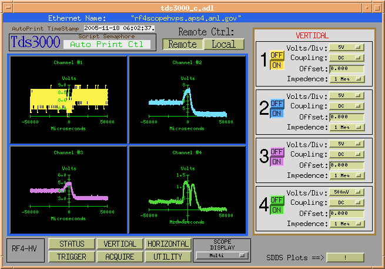

This product is available via the open source license described at the end of this document.
The tds3000 device support is a general purpose facility for
interfacing to all the oscilloscopes in the TDS 3000 and 5000 series. The intent
of this device support is to provide an interface though EPICS that had
a simple user interface. All of the main controls on the these scopes
are provided with an easy to use displays. These displays have been
developed with MEDM which has been a proven and reliable display
manager for EPICS.
Interfacing to these scopes can be accomplished though GPIB, Serial and Ethernet.
BackThis version provides
| $(scope)chan{n}CoupleMI | Channel n Couple status |
| $(scope)chan{n}CoupleMO | Channel n Couple control |
| $(scope)chan{n}EnableBI | Channel n On/Off status |
| $(scope)chan{n}EnableBO | Channel n On/Off Control |
| $(scope)chan{n}OffAI | Channel n Offset value |
| $(scope)chan{n}OffAO | Channel n Offset setting |
| $(scope)chan{n}VdivAI | Channel n Voltage per division analog value |
| $(scope)chan{n}VdivMI | Channel n Voltage per division value |
| $(scope)chan{n}VdivMO | Channel n Voltage per division setting |
| $(scope)chan{n}_ImpedBI | Channel n Impedance value |
| $(scope)chan{n}_ImpedBO | Channel n Impedance setting |
Scope time settings.
| $(scope)timeBaseAI | Read Horizontal Time Scale |
| $(scope)timeDelayAI | Read Time Delay |
| $(scope)timeDelayAO | Write Time Delay |
| $(scope)timeDivAMO | Select Time/Div Magnitude |
| $(scope)timeDivAO | Set Horizontal Time Scale |
| $(scope)timeDivBMO | Select Time/Div unit |
| $(scope)timeModeMI | Read Time Mode |
| $(scope)timeModeMO | Set Time Mode |
Scopes trigger settings.
| $(scope)timeRefAI | Trigger position |
| $(scope)timeRefMO | Set Trigger position |
| $(scope)holdoffAI | Trigger A Holdoff time |
| $(scope)holdoffAO | Set Trigger A Holdoff time |
| $(scope)trigLevAI | Read Trigger Level |
| $(scope)trigLevAO | Set Trigger Level |
| $(scope)trigSlopeMI | Read Trigger Slope |
| $(scope)trigSlopeMO | Set Trigger Slope |
| $(scope)trigSourMI | Read Trigger Source |
| $(scope)trigSourMO | Select Trigger Source |
Scopes acquisition control and
waveform readbacks.
Note: n is 1 to 4.
| $(scope)chan{n}ScaledWaveWF | Waveform n Scaled data |
| $(scope)scaledTimeAxisWF | Scaled time used for Scaled
Waveform data |
| $(scope)TimeAxisCountLI | Counts the number of record
points |
| $(scope)acquireStatBI | Scope Acquire Status |
| $(scope)singleSeqBI | Acquire Single trigger |
| $(scope)singleSeqBO | Select sequence mode |
| $(scope)runBO | Run Normal acquisition |
| $(scope)stopBO | Stop Normal acquisition |
| $(scope)stopReadRunSQ | Single read cycle |
| $(scope)triggerStateMI | Scope trigger state for acquisition |
| $(scope)ScopeTriggedCC | Scope Trigger status |
Scopes misc functions.
| $(scope)Name | Scope ID label |
| $(scope)GPIBenableBO | Remote/Local control |
| $(scope)autoScaleBO | Auto scale the scope |
| $(scope)erasePlotBO | Clears MEDM display waveforms |
| $(scope)initBO | Initialize scope to define
values at IOC power up or when scope is set to remote. |
| $(scope)resetBO | Sends *RST command to scope |
| $(scope)readSetupWF | Reads the oscilloscope setting. |
| $(scope)writeSetupWF | Not valid for the TDS3000 series |
| $(scope)recallMO | Recall scope setup 1-10 |
| $(scope)saveMO | Save scope setup 1-10 |
| $(scope)displayCtlMO | Select 1 of 6 MEDM scope control
displays |
| $(scope)displayCtl1MO | Select single or multi MEDM
waveform display |
Scopes print commands and print status, front panel display controls.
Note: These pvs are also used in the AutoPrint SNL
program.
| $(scope)scopeBusyBI | Printing OR Acquire status |
| $(scope)scopeInUseMO | User definable Semaphore |
| $(scope)ClearEventsBO | Clear scopes Event Status |
| $(scope)DESERegAI | Read Device Event Status Enable
Register |
| $(scope)DESERegAO | Set Device Event Status Enable Register |
| $(scope)EventQueueAI | Check for pending Events |
| $(scope)SESRegAI | read Standard Event Status
Register |
| $(scope)printDisplayBO | Print the display |
| $(scope)printErrBO | SNL print error status |
| $(scope)printerAbortBO | Abort print operation |
| $(scope)printerFormatMI | Read print format |
| $(scope)printerFormatMO | Write print format |
| $(scope)printerPortMI | Read printer port type |
| $(scope)printerPortMO | Write printer port type |
| $(scope)printerSetupBO | Configure printer port |
| $(scope)clearMenuBO | Clear scope display of any menus |
| $(scope)frontPanelLockBI | Front Panel Lock status |
| $(scope)frontPanelLockBO | Lock Front Panel controls |
| $(scope)ethernetNameSI | Ethernet name of scope |
| $(scope)WF_timeStampTS | Time stamp of last single
sequence trigger |
Waveform data in raw format, not
scaled.
By default, these pvs are disabled.
| $(scope)ref{n}WaveWF | Raw reference waveform data (not
tested) |
| $(scope)chan{n}WaveWF | Raw waveform data (not tested) |
| $(scope)WFenableBO | Enable these waveforms to be
updated. |
Waveform preamble information
Note: These fields are provided for diagnostics. All
other pvs must stop scanning. Then the DAT:SOURCE
command must issued to select the channel to view.
| $(scope)countAI | No count value (not used) |
| $(scope)pointsAI | Number of waveform points |
| $(scope)XincAI | Sampling interval in seconds or
Hz per point |
| $(scope)XorAI | Not used |
| $(scope)XrefAI | First sample in waveform |
| $(scope)YincAI | Vertical scale;e factor, usually
in volts |
| $(scope)YorAI | Vertical offset of a waveform. |
| $(scope)YrefAI | Vertical position of a waveform |
Generic MEDM displays were created to mimic the TDS3000
series front panel scope controls. Most of the basic functions of the
scope will be found in these display. Each display is shown below with
a brief description.
STATUS Display:
This display shows the status for all four channels. Each
channel is color matched to the scope traces.
In this display a Multi waveform mode is displayed to allow each
channel to have its own vertical
scale. A single waveform display mode can be selected by selecting the
SCOPE DISPLAY menu.
This mode is not shown.
VERTICAL Display:
This display gives the user access to each channels
vertical settings. Each channel can be turned ON
or OFF in addition to changing the characteristics of each channel.

HORIZONTAL Display:
This display has a reduced set of commands to control the
horizontal settings. If finer adjustments are
needed or other options need to be set, then the user needs to make the
adjustments via the local scope
front panel or other remote options. See Other Remote Option for more details.
TRIGGER Display:
This display provides the basic trigger function of the
scope.
ACQUIRE Display:
This display controls the acquisition of the scope. Two
modes are provided, single sequence and normal
mode. In Single Sequence mode, the Normal acquisition controls are
disabled to prevent the user from
interferring with single sequence operation. To place the scope in
single sequence mode, select
SEQUENCE and then click on "Single SQ" button. The single sequence
armed indicator should come
on in about 5 seconds. Once a trigger is received, the displays will
update in about 5 to 10 seconds. This
is due to the scan rate being set to 5 seconds. In most cases this will
not be an issue since single sequence
mode is used to capture a very inferquent event. If however a faster
update is desired, change pv
$(scope)readScaledWfsCC.SCAN
field to a faster rate. SRQs would be nicer, but this was originaly
developed using the EPICS GPIB support interfacing to an NI-1014 VME
module. The SRQ never realy
worked for the Tektronic scopes, so this scope package just simply
polls the Acquire and Trigger
status. Once the scope has triggered, the waveforms are acquired and
then the MEDM display is updated.
Normal mode has a RUN
and STOP buttons to control
the waveform acquisition. A scan rate menu
is provided to control the update rate of the waveforms. An old legacy
function called Stop/Read/Run
is provided to pause the update cycle to insure all four waveforms are
read with the same trigger event.
The number below the Erase button is the delay value in seconds from
the time the last waveform is read
from the scope to the time the scope is set to RUN state again.
The Erase button
will only erase the MEDM waveforms being displayed. This function will
not erase the
waveforms at the scope.
The AutoSet
button will change the vertical and horizontal setting to match the
current channel input
signals.
The Reset
button will issue the *RST command followed by $(scope)initBO pv which
will reconfigure
the scopes operating parameters. This command will not change the
vertical or horizontal settings.
UTILITY Display:
This display provides access printer functions and
configuration functions. The Configure
Printer
button does the
following: Ink saver ON, landscape, color waveforms, ethernet port and
format set to
EPSCOLOR. The first three parameter is set by $(scope)printerSetupBO
record. The ethernet port is
selected by $(scope)printerPortMO and the
format is selected by $(scope)printerFormatMO.
Use these
records to change the default settings.
Also, a network printer
must be configured on the scope if a network printer is used.
A special record type call asynRecord is provided. It is recommended to use this record as shown in the st.cmd file. Details are described in asynRecord. This section provides a brief description of how to use it.
Each IOC can load one or more instances of asynRecord. An example is:
cd ${ASYN}
dbLoadRecords("db/asynRecord.db","P=asyn,R=Test,PORT=L0,ADDR=15,IMAX=0,OMAX=0")
The example creates a record with name "asynTest" (formed from the concatenation of the P and R macros) that will connect to port "L0" and addr 15. After the ioc is started, it is possible to change PORT and/or ADDR. Thus a single record can be used to access all asyn devices connected to the IOC. Multiple records are only needed if one or more devices need a dedicated record.
An medm display is available for accessing an asynRecord. It is started as follows:
cd <asyn>/medm
medm -x -macro "P=asyn,R=Test" asynRecord.adl
The following medm display appears.
BackCopyright (c) 2005 University of Chicago All rights reserved.
tds3000 is distributed subject to the following license conditions:
SOFTWARE LICENSE AGREEMENT
Software: tds3000
1. The "Software", below, refers to tds3000 (in either source code, or
binary form and accompanying documentation). Each licensee is
addressed as "you" or "Licensee."
2. The copyright holders shown above and their third-party licensors
hereby grant Licensee a royalty-free nonexclusive license, subject to
the limitations stated herein and U.S. Government license rights.
3. You may modify and make a copy or copies of the Software for use
within your organization, if you meet the following conditions:
a. Copies in source code must include the copyright notice and this
Software License Agreement.
b. Copies in binary form must include the copyright notice and this
Software License Agreement in the documentation and/or other
materials provided with the copy.
4. You may modify a copy or copies of the Software or any portion of it,
thus forming a work based on the Software, and distribute copies of
such work outside your organization, if you meet all of the following
conditions:
a. Copies in source code must include the copyright notice and this
Software License Agreement;
b. Copies in binary form must include the copyright notice and this
Software License Agreement in the documentation and/or other
materials provided with the copy;
c. Modified copies and works based on the Software must carry
prominent notices stating that you changed specified portions of
the Software.
5. Portions of the Software resulted from work developed under a U.S.
Government contract and are subject to the following license: the
Government is granted for itself and others acting on its behalf a
paid-up, nonexclusive, irrevocable worldwide license in this computer
software to reproduce, prepare derivative works, and perform publicly
and display publicly.
6. WARRANTY DISCLAIMER. THE SOFTWARE IS SUPPLIED "AS IS" WITHOUT WARRANTY
OF ANY KIND. THE COPYRIGHT HOLDERS, THEIR THIRD PARTY LICENSORS, THE
UNITED STATES, THE UNITED STATES DEPARTMENT OF ENERGY, AND THEIR
EMPLOYEES: (1) DISCLAIM ANY WARRANTIES, EXPRESS OR IMPLIED, INCLUDING
BUT NOT LIMITED TO ANY IMPLIED WARRANTIES OF MERCHANTABILITY, FITNESS
FOR A PARTICULAR PURPOSE, TITLE OR NON-INFRINGEMENT, (2) DO NOT ASSUME
ANY LEGAL LIABILITY OR RESPONSIBILITY FOR THE ACCURACY, COMPLETENESS,
OR USEFULNESS OF THE SOFTWARE, (3) DO NOT REPRESENT THAT USE OF THE
SOFTWARE WOULD NOT INFRINGE PRIVATELY OWNED RIGHTS, (4) DO NOT WARRANT
THAT THE SOFTWARE WILL FUNCTION UNINTERRUPTED, THAT IT IS ERROR-FREE
OR THAT ANY ERRORS WILL BE CORRECTED.
7. LIMITATION OF LIABILITY. IN NO EVENT WILL THE COPYRIGHT HOLDERS, THEIR
THIRD PARTY LICENSORS, THE UNITED STATES, THE UNITED STATES DEPARTMENT
OF ENERGY, OR THEIR EMPLOYEES: BE LIABLE FOR ANY INDIRECT, INCIDENTAL,
CONSEQUENTIAL, SPECIAL OR PUNITIVE DAMAGES OF ANY KIND OR NATURE,
INCLUDING BUT NOT LIMITED TO LOSS OF PROFITS OR LOSS OF DATA, FOR ANY
REASON WHATSOEVER, WHETHER SUCH LIABILITY IS ASSERTED ON THE BASIS OF
CONTRACT, TORT (INCLUDING NEGLIGENCE OR STRICT LIABILITY), OR
OTHERWISE, EVEN IF ANY OF SAID PARTIES HAS BEEN WARNED OF THE
POSSIBILITY OF SUCH LOSS OR DAMAGES.
Back